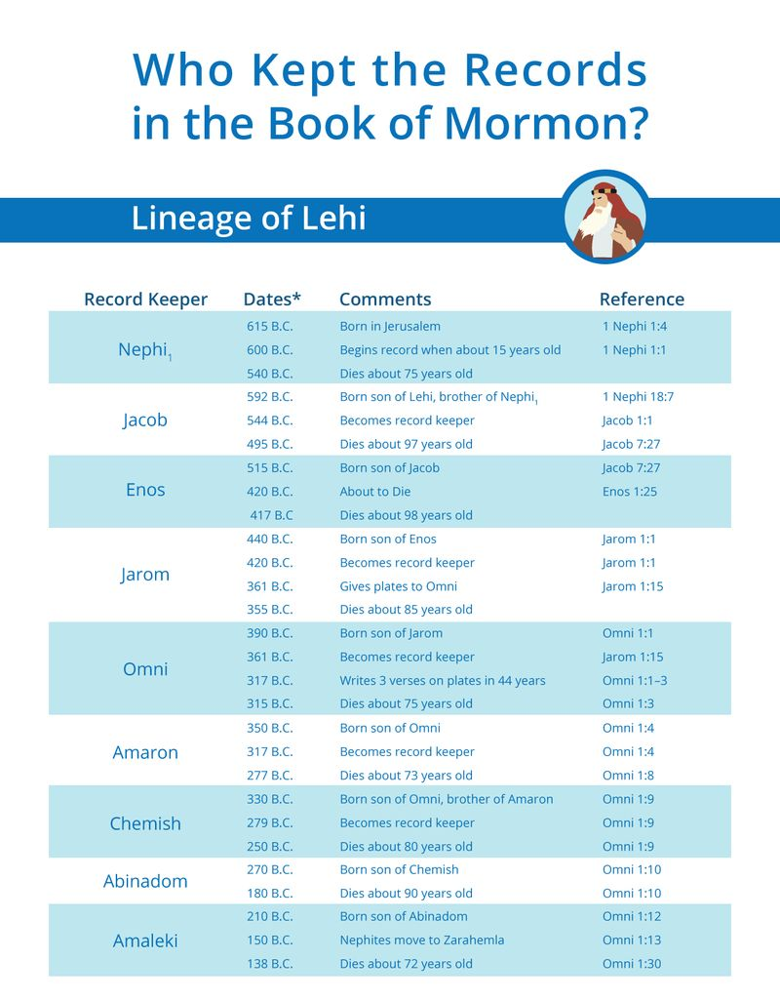
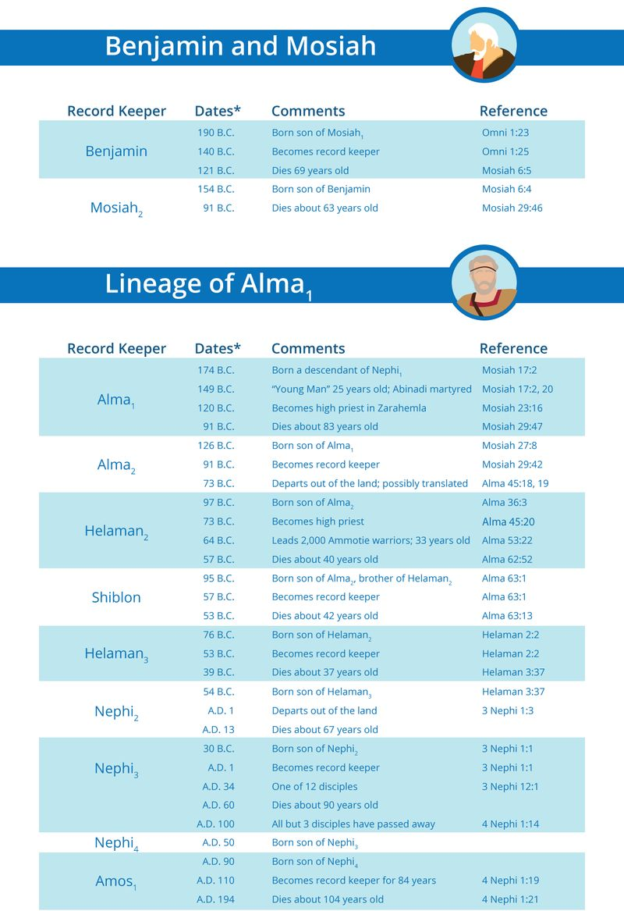
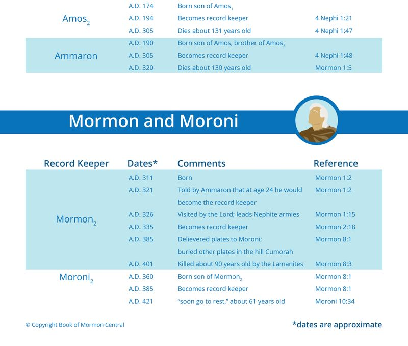
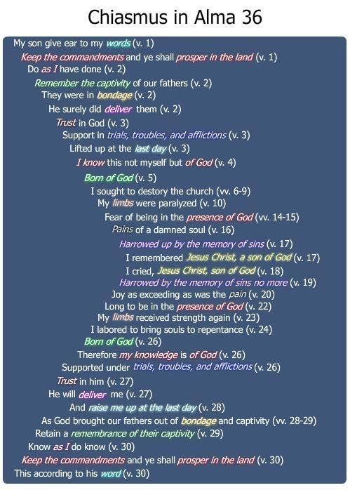

Alma was a diligent and devoted father. He had worked and traveled with these sons.
He trusted them among his missionary companions when he went to Antionum in an effort to correct the situation with the Zoramites there. Alma knew the needs and characters of each of these individual sons. While his words to them do not sound to our ears like patriarchal blessings, in an important way these chapters preserve the father’s blessings given by Alma to his boys. Alma the Elder was a good father to Alma the Younger, and he in turn was a faithful father to these three sons. His blessings and instructions in chapters 36–38 will soon turn out to be a major part of his legacy to them, as Alma will depart later that same year from their midst and this life (Alma 45:18).
When he left, Alma had equipped his sons well. Corianton will repent of his youthful misbehavior and will “go forth among the people” with his brothers “to declare the word” (Alma 43:1). Helaman will become the high priest and head of the Church, as well as the leader of the Ammonite stripling warriors. When Helaman dies only 17 years after his father’s blessings, Shiblon will become the faithful keeper of the sacred records (Figure 1), likely because Helaman’s son Helaman was too young to assume that full responsibility. But soon Shiblon will pass the records on to Helaman, the son of Helaman, when Shiblon dies only four years after his brother Helaman had died (Alma 63:1, 10). Both of them died relatively young, perhaps due to disease or hardships



Figure 1 John W. Welch and Greg Welch, "Who Kept the Records in the Book of Mormon? (By Lineages)," in Charting the Book of Mormon, chart 17.
Inflicted on their bodies during the miseries of the seven years of war in the twenty war- chapters here in the last part of the Book of Alma.
In spite of these challenges, they passed the mantle of recordkeeping and spiritual leadership on down through the lineage of Alma, clear down to the end of Nephite history when the records were finally entrusted to the youthful leader Mormon. No doubt the words of Alma, found in the seven chapters Alma 36–42, were deeply inspiring to all of Alma’s posterity.
In the 2020 Come Follow Me manual, p. 115, the lesson rightly points out that “Alma 36 is a great example of a form of Hebrew poetry called chiasmus, in which words or ideas are presented in a certain order, leading to a central idea, and then repeated in reverse order.” This definition is a perfect description of Alma 36. For further information, the manual invites readers to consult the Book of Mormon Student Manual which has been used for many years in seminary and institute classes.
That manual presents material based on the groundbreaking articles I have published over the years about chiasmus, beginning in BYU Studies in 1969 and in the New Era in 1972, listed below. There and elsewhere I have specifically discussed chiasmus in Alma 36, both in LDS publications and also in scholarly books and reference works. Of all the passages in world literature that have ever been found to be chiastic, Alma 36 is among the very best examples of this form of composition. It truly ranks as a masterpiece of world religious literature.
This is not the place to revisit all of these publications about Alma 36, but I would like to draw attention here to a couple particular introductory points.
First, I have often told the story about my discovery of chiasmus in King Benjamin’s Speech on August 16, 1967. It’s readily available on YouTube. But I have not before told the story of the discovery of chiasmus in Alma 36, the details of which I just recently ran across in a stack of letters that I wrote home in 1968–1969.
I had returned home from the mission field to resume studying as a Junior at BYU in September 1968. I began reporting my findings about chiasmus to my professors and directors of the Honors Program, and soon was invited to speak in classes and firesides about this new discovery. I was also called to be the Gospel Doctrine teacher in my student ward, and that year the Sunday School curriculum covered the Book of Mormon. On Friday, March 7, 1969, I was introduced to a beautiful and charming graduate student. I would never again date anyone else. On Saturday, March 8, I went to the Manti Temple with my ward, my first time to that amazing pioneer house of holiness. Then, on Sunday, March 9, I taught a Sunday School lesson that “went real well—we drew up a character sketch of Alma Jr.,” as my letter home stated. In the process of considering what Alma cared most about, we read his accounts of his conversion, in Mosiah 27, Alma 5, and Alma 36.
It was in that context that I first found the chiastic structure of Alma 36. Writing in pencil in the margins of the printing of the Book of Mormon I was using, I noted nine elements in the first half of Alma 36 and the same nine elements in the second half in the opposite order. At the turning point in the middle I just drew an arrow, and at the top of the page wrote “Great!” That Sunday night when I wrote my weekly letter home to my parents, I noted, just in passing, “I also just found a gorgeous pattern in Alma 36.”
That has to be one of the greatest weekends in my life. I believe I was blessed for going to the temple and for taking my church calling seriously. I was blessed by finding what I

Figure 2 John W. Welch and Greg Welch,” Chiasmus in Alma 36," in Charting the Book of Mormon, chart 132.
think is the greatest chiastic composition ever written. I was also blessed by finding the wonderful woman to whom I have been married now for fifty-one fabulous years. Life’s blessings don’t get much better than that.
Second, I want to thank and celebrate the many people who have independently refined and reformatted the layout and typesetting of the distinct chiastic structure in Alma 36.
In several of my various publications involving Alma 36, I have modified my presentation from time to time, depending on the purposes and typesetting options available in different book or journal settings. In my 1989 report on Chiasmus in Alma 36, I replicate seven different layouts that had been published, to that date, by myself and others. Here is a standard chart (Figure 2), following number 132, that is often used to highlight the basic inversion and central turning point in Alma 36: Since then, in the last twenty years, there have been several other proposals advanced, as careful examiners continue to analyze and appreciate the skill with which Alma tells his conversion story here in Alma 36. The best and most detailed recent studies have been published by Noel Reynolds and Stephen Ehat.
As parents, we have the authority to bless our children. Worthy fathers also have the priesthood power to promise them serious things in a father’s blessing. When moved by the spirit, we know that the Lord’s promises are available and we can promise our children what the Lord will support. Do we do that very often? We usually bless our children with little more than a general blessing. It is not often a very specific or concrete blessing.
I know that when we give a blessing and are moved by the spirit, the Lord will not let us down if we feel inspired to go out on a limb. We go out on that limb by beginning to speak, and then letting the words of the Lord fill in the rest. If we begin by saying, “I promise you,” we have to stop and think what the promise is going to be. Then the Lord can tell us what it should be. If we do not begin, we may never open the channels of revelation to receive the words of a much-needed promised blessing.
Notice that Alma begins his words to both Helaman and then to Shiblon by saying something like, “This is what I did when I was a young man.” How many of us begin talking to our children by saying, “Let me tell you all the mistakes I made when I was in high school”? Most of us would rather pretend those things never happened. I don’t think I have ever told my children all about the unwise mistakes of my youth.
Would it help our children if we were to open up more so that they could share their experiences or difficulties with us? When should we share this personal information with our children? When they are young, when they are teenagers, or when they are young men? Alma advised Helaman, “learn wisdom in thy youth” (37:35). If young children hear about your mistakes and what you learned from those experiences, they may better relate with you, love you more, and accept you more. I wonder, if you wait to share your vulnerabilities and the mistakes you have made until they are 16 or 17, they may feel betrayed by suddenly realizing that you are not as perfect as they thought you were. In their later teens, your children have already built up a certain impression about you. Maybe “learning wisdom in youth” means that we need to be open to discussing some of these things when our children are still relatively young.
While Alma spent three days in some kind of spiritual state—shock, coma, or something not defined—he was cognizant of what was going on. He had agonized, his soul was being wracked with eternal torment. He said he felt the pains of a damned soul, but then he remembered his father had spoken “concerning the coming of one Jesus Christ, a Son of God, to atone for the sins of the world” (36:17). He then felt “joy” and “marvelous light” (36:20).
Alma explained, that his “joy” was “as exceeding as [had been his] pain!” He then stated, I “thought I saw, even as our father Lehi saw, God sitting upon his throne, surrounded by numberless concourses of angels, in the attitude of singing and praising their God.” Alma is directly quoting Lehi’s words found in 1 Nephi 1:8. Why didn’t Alma put quotation marks around the quoted text? Quotations marks did not exist in Alma’s day. Punctuation marks were invented in Late Antiquity or in the Middle Ages.
Greek and Hebrew texts of antiquity had no punctuation marks at all. Instead of using quotation marks, authors of ancient texts would say something like, “as Lehi said.” The reader was expected to realize that a direct quote was being used. And here, Alma quotes Lehi precisely. That’s pretty amazing, when you stop and think about it.